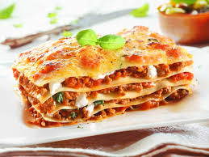

Lasagne

Ingredienten
- Lasagne sheets (fresh or dried)
- 500g ground beef (or a mix of beef and pork)
- 1 onion, finely choppedr
- 2 garlic cloves, minced
- 400g canned tomatoes (or passata)
- 2 tablespoons tomato paste
- 1 teaspoon dried oregano (or fresh if available)
- 1 teaspoon dried basil
- 1/2 cup red wine (optional, adds depth to the sauce)
Bereiding
- eat the olive oil in a large pan over medium heat.
-
Cook the macaroni according to the package instructions until al dente.
- Drain and set aside.
- In a saucepan, melt the butter over medium heat.
-
Stir in the flour and cook for 1-2 minutes, stirring constantly (this is
called a roux).
- Slowly whisk in the milk, making sure there are no lumps.
- Continue cooking and stirring until the mixture thickens.
-
Reduce the heat and stir in the grated cheese until it’s melted and
smooth.
- Season with salt and pepper to taste.